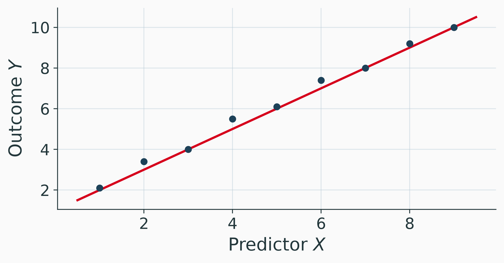
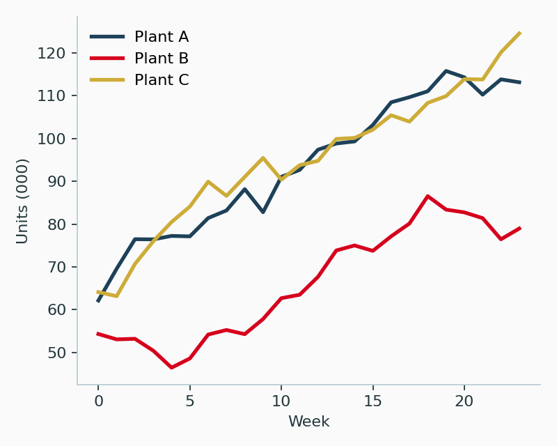
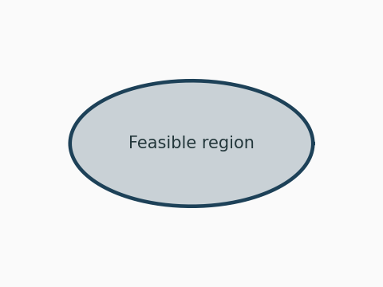
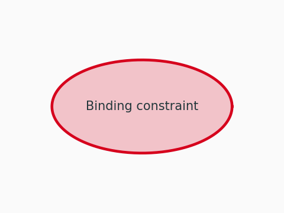
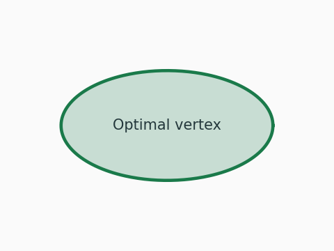

%%{init: {"themeVariables": {"fontSize": "24px", "fontFamily": "Helvetica Neue, Segoe UI, Helvetica, Liberation Sans, DejaVu Sans, Arial, sans-serif"}}}%%
flowchart LR
A[Data] --> B[Model] --> C[Prediction]
style A fill:#E8ECEE,stroke:#1D4158,stroke-width:2px,color:#23373B
style B fill:#E8ECEE,stroke:#1D4158,stroke-width:2px,color:#23373B
style C fill:#E8ECEE,stroke:#1D4158,stroke-width:2px,color:#23373B
Modeling and Optimization
Pattern Gallery
Sebastian Souyris
MGMT 6460 Fall 2026
Roadmap
\[ \newcommand{\argmax}{\operatorname*{argmax}} \newcommand{\argmin}{\operatorname*{argmin}} \newcommand{\E}{\operatorname{\mathbb{E}}} \newcommand{\Var}{\operatorname{Var}} \newcommand{\Cov}{\operatorname{Cov}} \newcommand{\Corr}{\operatorname{Corr}} \newcommand{\plim}{\operatorname{plim}} \newcommand{\tr}{\operatorname{tr}} \newcommand{\rank}{\operatorname{rank}} \newcommand{\N}{\mathcal{N}} \newcommand{\R}{\mathbb{R}} \newcommand{\iid}{\overset{\text{i.i.d.}}{\sim}} \newcommand{\inprob}{\xrightarrow{\;p\;}} \newcommand{\indist}{\xrightarrow{\;d\;}} \newcommand{\eps}{\varepsilon} \newcommand{\bm}[1]{\boldsymbol{#1}} \]
- Layouts and Columns
- Box Environments
- Mathematical Notation
- Tables
- Code Listings
- Graphics
- Hyperlinks and Cross-References
- Pacing
- Practice Pattern
- Summary, References and Appendix
Layouts and Columns
Single Column
Default layout. Text flows the full frame width.
- Bullets use the Metropolis defaults
- List spacing is patched in
theme.scss(2px item separation, matching the 2pt of0_Main.tex:354) - Nest a list to step the bullet down one size
Two Columns (50/50)
Left column. Use for paired definitions, pro and con framing, or a formula on the left with the intuition on the right.
Right column. Add .v-center to the .columns div to centre both columns vertically, the equivalent of Beamer’s [c].
Two Columns (Asymmetric 60/36)
Wider column. Hosts the core narrative, multi-line derivations, or any element that needs horizontal space.
Sidebar Callout
A narrow column often holds a box, a small chart, or a definition keyed to the main text.
Box Environments
Definitions and Key Results
Note
callout-note renders as defbox, the default box. Use it for definitions, theorems, key equations, and neutral callouts.
Boxed Equation Inside a defbox
\[ f(x) = \int_{-\infty}^{\infty} g(t)\, e^{-2\pi i x t}\, dt \]
Cautions and Violations
Warning
callout-warning renders as warnbox in RPI Red. It flags assumption violations, common errors, and pitfalls. Overuse dilutes the visual signal, so keep it for real warnings.
Exercises and Practice
Tip
callout-tip renders as practicebox in green. It marks in-class exercises and Colab notebook prompts.
- First sub-question.
- Second sub-question.
Takeaways and Bottom Lines
Important
callout-important renders as insightbox in RPI Gold. It highlights managerial takeaways, exam tips, and bottom-line summaries.
Lightweight Neutral Callout
Caution
callout-caution renders as notebox, the lightest weight in the family. It carries no alert colour, so it recedes behind the four semantic boxes above.
Worked Example
Every box takes a title through title="...", the counterpart of \begin{notebox}[Worked Example]. Omit it and the default title applies.
Mathematical Notation
Math: Inline, Display, Aligned
Inline: the estimator \(\hat{\theta} = \argmin_{\theta} L(\theta)\) is consistent under regularity conditions.
Display:
\[ \E[Y \mid X] = \beta_0 + \beta_1 X \]
Aligned multi-line derivation:
\[ \begin{aligned} L(\theta) &= \textstyle\sum_{i=1}^{n} \bigl(y_i - f(x_i; \theta)\bigr)^2 \\ &= \textstyle\sum_{i=1}^{n} y_i^2 - 2 y_i f(x_i; \theta) + f(x_i; \theta)^2 . \end{aligned} \]
Math: Matrices and Named Operators
Matrix form:
\[ \bm{X} = \begin{pmatrix} 1 & x_{11} & \cdots & x_{1k} \\ \vdots & \vdots & \ddots & \vdots \\ 1 & x_{n1} & \cdots & x_{nk} \end{pmatrix} \]
Named operators:
- \(\E[\cdot]\), \(\Var(\cdot)\), \(\Cov(\cdot, \cdot)\)
- \(\argmin_{\theta}\), \(\argmax_{\theta}\), \(\plim\)
- \(\inprob\), \(\indist\)
- \(\eps_i \iid \N(0, \sigma^2)\)
Math: Boxed Equation for Emphasis
\[ \boxed{\; \bm{b} = (\bm{X}'\bm{X})^{-1} \bm{X}'\bm{y} \;} \]
\boxed{} renders a thin frame around the contents. Reserve it for the canonical result of a derivation, one per slide.
Tables
Tables: Basic booktabs
| Variable | Estimate | Std. Error | p-value |
|---|---|---|---|
| Intercept | 1.20 | 0.15 | <0.001 |
| Predictor 1 | 0.45 | 0.08 | <0.001 |
| Predictor 2 | -0.12 | 0.06 | 0.043 |
Tables: Highlighted Cells
| Variable | Estimate | SE | t | p-value |
|---|---|---|---|---|
| Intercept | 1.20 | 0.15 | 8.00 | <0.001 |
| Predictor 1 | 0.45 | 0.08 | 5.63 | <0.001 |
| Predictor 2 | -0.12 | 0.06 | -2.00 | 0.043 |
| Predictor 3 | 0.03 | 0.09 | 0.33 | 0.741 |
| Diagnostic | Result | p |
|---|---|---|
| Test 1 | Pass | 0.412 |
| Test 2 | Fail | <0.001 |
[x]{.alert} is the span equivalent of \alert{} and renders RPI Red. [x]{.pass} and [x]{.fail} mark diagnostic outcomes.
Code Listings
Code: Python ExampleNotebook.ipynb
A Colab URL goes in the slide heading, the counterpart of \notebooklink{} in a frame title. code-fold="false" keeps a teaching listing open on a slide the deck defaults to folding.
Graphics
Graphics: Flow Diagram
Graphics: Scatter and Fitted Line

Graphics: Figure with Caption

fig-cap and fig-align behave the same in both formats.
Figure 1 shows a cross-reference, which replaces the manual figure numbering a Beamer deck would carry.
Diagrams
Diagrams: Flowchart
No colours in the block. The eight $mermaid-* variables in theme.scss supply them.
flowchart LR
A[(Historical<br/>demand)] --> B[Forecast]
B --> C{Service level}
C -->|95%| D[Safety stock]
C -->|99%| E[Safety stock<br/>plus expedite]
D --> F[Order quantity]
E --> F
Diagrams: Timeline
Copy the cScale block verbatim. The hex values are not the deck palette, and the next slide says why.
%%{init: {"themeVariables": {
"fontSize": "20px",
"cScale0": "#183649", "cScaleLabel0": "#FAFAFA",
"cScale1": "#B20017", "cScaleLabel1": "#FAFAFA",
"cScale2": "#AB8F2F", "cScaleLabel2": "#FAFAFA",
"cScale3": "#16663E", "cScaleLabel3": "#FAFAFA",
"cScale4": "#006BAC", "cScaleLabel4": "#FAFAFA"}}}%%
timeline
title Unit 1
Week 1 : Formulation
Week 2 : Graphical solution
Week 3 : Simplex
Week 4 : Duality
Week 5 : Sensitivity
Diagrams: Why Those Hex Values Are Not the Palette
A timeline draws two rows. cScale colours the section row, and mermaid derives the event row beneath it by multiplying every RGB channel by 1.2 [measured across four seeds: ratios 1.200, 1.201, 1.203, 1.207]. Seeding with deck red #D6001C therefore puts #FF0022 on the event row, a brighter red than the deck owns anywhere.
So the seed is the brand colour divided by 1.2, and the event row lands on brand:
| Seed written in the block | Event row rendered | Deck colour |
|---|---|---|
#183649 |
#1D4158 |
deck blue |
#B20017 |
#D6001C |
RPI red |
#AB8F2F |
#CDAC38 |
RPI gold |
#16663E |
#1A7A4A |
DS green |
#006BAC |
#0080CE |
RPI blue, one unit off from rounding |
Four of the five match byte for byte. For a colour not in this table: seed = round(channel / 1.2) for each of R, G and B.
Diagrams: State Machine
stateDiagram-v2
[*] --> Backlogged
Backlogged --> Released : capacity freed
Released --> InProcess : setup complete
InProcess --> Blocked : downstream full
Blocked --> InProcess : buffer drains
InProcess --> [*] : shipped
Diagrams: Sequence
%%{init: {"themeVariables": {
"actorBkg": "#EFF2F3", "actorBorder": "#1D4158", "actorTextColor": "#23373B",
"signalColor": "#1D4158", "signalTextColor": "#23373B", "actorLineColor": "#B9CCD8",
"noteBkgColor": "#FAF7EB", "noteTextColor": "#23373B", "noteBorderColor": "#A48A2D",
"labelBoxBkgColor": "#EFF2F3", "labelBoxBorderColor": "#1D4158",
"labelTextColor": "#23373B", "sequenceNumberColor": "#FAFAFA"}}}%%
sequenceDiagram
autonumber
Retailer->>Distributor: Order q
Distributor->>Factory: Replenish
Factory-->>Distributor: Lead time L
Distributor-->>Retailer: Ship q
Note over Retailer,Factory: Each delay amplifies the next order
Diagrams: Entity Relationship
%%{init: {"themeVariables": {
"attributeBackgroundColorOdd": "#EFF2F3",
"attributeBackgroundColorEven": "#FAFAFA"}}}%%
erDiagram
PLANT ||--o{ PRODUCTION_RUN : schedules
PRODUCT ||--o{ PRODUCTION_RUN : yields
PRODUCTION_RUN }o--|| SHIFT : uses
PLANT {
string plant_id
int capacity_hours
}
PRODUCTION_RUN {
date run_date
float units
}
Diagrams: Gantt
Gantt ignores cScale and takes thirteen colour keys of its own.
%%{init: {"themeVariables": {
"fontSize": "16px",
"sectionBkgColor": "#EFF2F3", "altSectionBkgColor": "#FAFAFA",
"taskBkgColor": "#1D4158", "taskBorderColor": "#1D4158",
"taskTextColor": "#FAFAFA", "taskTextDarkColor": "#FAFAFA",
"taskTextOutsideColor": "#23373B",
"activeTaskBkgColor": "#D6001C", "activeTaskBorderColor": "#D6001C",
"doneTaskBkgColor": "#536F80", "doneTaskBorderColor": "#536F80",
"todayLineColor": "#D6001C", "gridColor": "#B9CCD8"}}}%%
gantt
dateFormat YYYY-MM-DD
axisFormat %b %d
section Modelling
Formulate :done, f1, 2026-09-01, 7d
Solve :active, s1, after f1, 10d
section Reporting
Sensitivity : r1, after s1, 7d
Write-up : r2, after r1, 5d
Diagrams: What Each One Needs
Every row was settled by rendering the diagram and sampling the pixels.
| Diagram | Block needs | What was off-palette without it |
|---|---|---|
flowchart, graph |
nothing | |
stateDiagram-v2 |
nothing | |
erDiagram |
2 keys | lilac attribute rows |
sequenceDiagram |
12 keys | #FFF5AD notes, olive borders, lilac actors |
timeline |
10 keys | pastel #B8A5F5 #FCF3A0 #C5F09B |
gantt |
13 keys | purple task borders, red-on-red task text |
journey, pie, classDiagram |
not tested | check before using one in a lecture |
Mermaid is not a drawing tool
Mermaid lays out the diagram; you do not place the boxes. A diagram that has to look a particular way is a matplotlib figure or a hand-drawn SVG in assets/, not a mermaid block fought into shape.
Images
Images: Full-Bleed Background
The image is the slide. Nothing else competes with it.
Images: Beside Text
Throughput at the three plants over two years.
- Plant A holds a flat trend
- Plant B is the only one with a visible break
- Plant C tracks A at a lower level
The break in B is week 14, when the second line came online.

Images: A Grid



Three columns of equal width. Add {.fragment} to a column to reveal the panels one at a time.
Tabsets and Video
Tabsets: Two Routes to One Answer
The feasible region has five vertices. Evaluate the objective at each and take the best. That works for two variables and is hopeless for twenty.
\[\max_{x \ge 0} \; c^{\top}x \quad \text{s.t.} \quad Ax \le b\]
The simplex method walks vertices along improving edges, which is the same search the graphical route does by eye.
Video: A Local File
Hyperlinks and Cross-References
External Links ExampleNotebook.ipynb
Embed Colab and notebook URLs directly in the slide heading. On the deckblue bar they render white and underlined, because RPI Red falls to 1.9:1 contrast there (0_Main.tex:254-257).
Inline external link: example.com.
Forward jump into the appendix: Jump to Appendix.
Internal Anchor for Backref
This slide carries the id anchor, set with {#anchor} on the heading. It replaces \hypertarget{anchor}{}.
Any other slide jumps here with [text](#anchor), the counterpart of \hyperlink{anchor}{...}.
The appendix at the end of this deck shows the symmetric back-jump.
Pacing
Pacing with Pauses
Each . . . creates a new overlay, exactly as \pause does.
Reveal 2: justify the wrong intuition before showing the right one.
Reveal 3: deliver the punchline.
Pacing with Fragments
An incremental list stages one item per click:
- First point
- Second point
- Third point
A single span stages on its own: this phrase appears second. That is the equivalent of \only<2>{...}.
Staging Rules (Quick Reference)
Reveal Has No vspace
. . .for\pause,::: {.incremental}for a staged list[x]{.fragment}for\only<n>and\onslideincremental: falsein_quarto.ymlkeeps staging opt-in, matching the Beamer deck’s practice- Vertical rhythm is set once in
theme.scssrather than per slide
Overflow Remedies
If a Slide Overflows
- Split into two slides. This pair demonstrates its own rule.
- Drop the slide to
{.smaller}or the box to{.smaller}. - Move the surplus to the appendix and link forward to it.
- Never scale a slide down to fit a box: the type falls below the 28px floor.
Practice Pattern
Practice Problem
Practice Problem Title
Problem statement in one or two sentences.
- Sub-question A.
- Sub-question B.
- Sub-question C.
Practice Problem: Solution
(a) Worked solution.
\[ \begin{aligned} \hat{y} &= b_0 + b_1 x \\ &= 1.0 + 0.5 \cdot 4 = 3.0 \end{aligned} \]
(b) Brief written answer.
(c) Conceptual answer with managerial framing, one to two sentences in plain prose.
Summary and Closing
Summary
Core Takeaways
- First takeaway
- Second takeaway
- Third takeaway
Watch Out For
- First caution
- Second caution
- Third caution
Bottom Line
One sentence summarising the deck.
References
Inline citation: the classic treatment of this design is Tufte (2001), and the identification argument follows Angrist and Pischke (2009).
Angrist, Joshua D., and Jörn-Steffen Pischke. 2009. Mostly Harmless Econometrics: An Empiricist’s Companion. Princeton University Press. https://doi.org/10.1515/9781400829828.
Tufte, Edward R. 2001. The Visual Display of Quantitative Information. 2nd ed. Graphics Press.
Questions?
Introduction to Linear Programming
MGMT 6460
Appendix
Appendix
Supplementary material
Appendix: Reference Patterns
Appendix slides sit behind a level-1 heading marked {.appendix}. Reveal has no counterpart to appendixnumberbeamer, so the slide count continues rather than restarting.
Citation format (full reference): Author, A. and Author, B. (Year). Title of paper. Journal Name, Vol(Issue), pp. xx to yy.
Inline reference: (Author and Author, Year), or @key when the entry is in references.bib.
Interactive Plot Recipes
How These Fit Together
Python computes, Observable draws. Every recipe below has the same two halves: a {python} cell ending in ojs_define(), and an {ojs} cell holding the plot spec.
The marks these recipes use are the working vocabulary: Plot.dot, Plot.line, Plot.barY, Plot.rectY with Plot.binX, Plot.ruleX, Plot.ruleY, Plot.text, Plot.linearRegressionY, Plot.tip. The controls are Inputs.range, Inputs.select, Inputs.radio, and Inputs.form to combine several into one name. Plot.pointerX is a TRANSFORM rather than a mark: wrap any mark in it and that mark draws only for the row nearest the cursor, which is recipe 8.
Show code
// House style, referenced by every plot below. Change it once here and
// all nine follow. Values are the theme palette (theme.scss lines 36-49).
//
// `cat` is the ordinal range for a categorical colour channel, used by
// recipe 9. It is NOT the named colours above in some order, and the
// measurement is the reason. The obvious set, the five RPI accents
// [blue, red, gold, green, sky], puts deck blue #1D4158 and RPI green
// #1A7A4A at CIELAB dE 2.8 of each other under DEUTERANOPIA, the common
// form of red-green colour blindness, which is indistinguishable. A
// category encoded in a colour a reader cannot separate is worse than no
// colour, the same failure recipe 5's comment records for a continuous
// scale.
//
// So `cat` keeps deck blue and RPI red, which carry the deck's identity
// and are the two a two-group plot will use, and takes the rest from
// Okabe-Ito, a range designed for colour-vision deficiency. Measured as
// the minimum pairwise dE, worst case across deuteranopia, protanopia
// and tritanopia:
//
// five RPI accents 2.8 fails
// cat, first five 12.6
// cat, all six 12.6
// cat, normal vision 47.6
//
// Plot takes colours from the front of the range, so a four-group or
// five-group plot gets the measured-good prefix without doing anything.
// Beyond six, stop encoding the category in colour and use facets.
//
// Two cautions this measurement does not cover. The L* values are
// [26, 45, 58, 70, 71], so the last two are close in lightness and would
// merge on a greyscale handout or a badly calibrated projector. And a
// legend alone asks the reader to hold six colour-name pairs in mind;
// direct labels on the marks beat it whenever the plot has room.
rpi = ({
red: "#D6001C",
blue: "#1D4158",
gold: "#CDAC38",
sky: "#0081CE",
green:"#1A7A4A",
grid: "#B9CCD8",
ink: "#23373B",
paper:"#FAFAFA",
cat: ["#1D4158", "#D6001C", "#E69F00", "#009E73", "#56B4E9", "#8C5A96"]
})Show code
// Shared plot defaults. Spread it into a spec with `...frame,` and
// override anything after. Width 820 fits the 1050px canvas with the
// theme's side insets. Height 300 is what is left once a frame title
// (about 70px), one line of prose (about 40px) and one control (about
// 46px) have taken their share of the 591px slide; at 340 the axis ran
// off the bottom edge [measured].
frame = ({
width: 820,
height: 300,
marginLeft: 58,
marginBottom: 42,
style: { background: rpi.paper, color: rpi.ink, fontSize: "13px" }
})Recipe 1: A Slider That Refits the Model
Drag the sample size. The fit moves; the population line does not.
Show code
Show code
Plot.plot({
...frame,
x: { label: "Predictor x →", grid: true, domain: [0, 10] },
y: { label: "↑ Outcome y", grid: true, domain: [-8, 24] },
color: { legend: false },
marks: [
// Population relationship, fixed. Drawn first so the fit sits on top.
Plot.line([{x: 0, y: truth.b0}, {x: 10, y: truth.b0 + truth.b1 * 10}],
{ x: "x", y: "y", stroke: rpi.grid, strokeWidth: 3 }),
Plot.dot(shown, { x: "x", y: "y", r: 3.4, fill: rpi.blue, fillOpacity: 0.75 }),
// Plot fits the regression itself; no model code in the browser.
Plot.linearRegressionY(shown, { x: "x", y: "y", stroke: rpi.red, ci: 0.95 }),
Plot.ruleY([0], { stroke: rpi.grid })
]
})Recipe 2: A Histogram Whose Bins You Can Argue About
Bin width is a modelling choice, and these service times are bimodal.
Show code
Show code
Plot.plot({
...frame,
x: { label: "Service time (minutes) →", domain: [0, 48] },
y: { label: "↑ Cases", grid: true },
marks: [
// Plot.binX is a TRANSFORM: it wraps the channel options and does the
// counting. `interval` is the bin width; `y: "count"` the tally.
Plot.rectY(service_times, Plot.binX(
{ y: "count" },
{ x: "minutes", interval: binw, fill: rpi.blue, fillOpacity: 0.85 }
)),
Plot.ruleY([0], { stroke: rpi.ink })
]
})Recipe 3: A Series Picker and a Smoother
Two controls, one plot. Either name changing recomputes the spec.
Show code
Show code
Show code
Plot.plot({
...frame,
x: { label: null, grid: true },
y: { label: "↑ Units shipped", grid: true },
marks: [
Plot.line(series, { x: "week", y: "units", stroke: rpi.grid, strokeWidth: 1.2 }),
// Plot.windowY is the smoother. k = 1 leaves the raw line alone, which
// is why the slider starts there.
Plot.line(series, Plot.windowY(
{ k: win, anchor: "middle", reduce: "mean" },
{ x: "week", y: "units", stroke: rpi.red, strokeWidth: 2.4 }
)),
Plot.ruleY([0], { stroke: rpi.grid })
]
})Recipe 4: Ordering Changes the Reading
Three orderings of one dataset, and three different arguments.
Show code
Show code
// A plain object used as a lookup table replaces a switch statement. Each
// entry is a comparator: negative means a sorts before b.
cmp = ({
"Alphabetical": (a, b) => a.supplier.localeCompare(b.supplier),
"By defect rate": (a, b) => b.rate - a.rate,
"By volume": (a, b) => b.volume - a.volume
})[order]Show code
// Set the x DOMAIN explicitly rather than using a mark's `sort` option.
// `sort: {x: "supplier"}` looks plausible and fails with "missing channel:
// supplier" [measured]: that option orders the x domain by a BOUND CHANNEL,
// and `supplier` is the x channel itself, not a separate one. An explicit
// domain array sidesteps the whole question and reads more plainly.
// [...defects] copies first, because .sort() mutates in place and mutating
// an ojs_define value corrupts every other cell that reads it.
order_x = [...defects].sort(cmp).map(d => d.supplier)Show code
Plot.plot({
...frame,
marginBottom: 78,
x: { label: null, tickRotate: -35, domain: order_x },
y: { label: "↑ Defects per 1,000 units", grid: true, domain: [0, 8.6] },
marks: [
Plot.barY(defects, { x: "supplier", y: "rate", fill: rpi.blue }),
Plot.text(defects, {
x: "supplier", y: "rate", text: d => d.rate.toFixed(1),
dy: -8, fill: rpi.ink, fontSize: 12
}),
Plot.ruleY([0], { stroke: rpi.ink })
]
})Recipe 5: Detail on Demand, No Control
Hover a point. tip: true reads whatever channels you bound.
Show code
Plot.plot({
...frame,
x: { label: "Capacity utilisation →", grid: true, tickFormat: ".0%" },
y: { label: "↑ Backlog (units)", grid: true },
// `type: "linear"` and an explicit domain, both needed. RdYlGn is a
// DIVERGING scheme, so Plot gives it a diverging scale pivoted at zero
// by default; on-time delivery runs 0.82 to 1.0, so every point landed
// on the same dark green and the legend ticked -0.5, 0.0, 0.5
// [observed]. A colour channel that encodes nothing is worse than none.
color: {
scheme: "RdYlGn", type: "linear", domain: [0.82, 1.0],
legend: true, label: "On-time delivery", tickFormat: ".0%"
},
marks: [
Plot.ruleY([panel.reduce((s, d) => s + d.backlog, 0) / panel.length],
{ stroke: rpi.red, strokeWidth: 2 }),
Plot.dot(panel, {
x: "utilisation", y: "backlog", r: 8, fill: "otd", stroke: rpi.ink,
// `tip: true` is the whole tooltip. Channels named here appear in it.
channels: { quarter: "quarter" },
tip: true
})
]
})Recipe 6: Precompute in Python, Select in the Browser
Too slow to refit live? Evaluate a grid at render time and index it.
Show code
Show code
Plot.plot({
...frame,
// The q* label sits above its dot, and the frame's default top margin
// clips it [observed]. Anything drawn OUTSIDE the data rectangle needs
// margin bought for it here.
marginTop: 28,
x: { label: "Order quantity q →", grid: true },
y: { label: "↑ Expected profit ($)", grid: true },
marks: [
Plot.line(curve, { x: "q", y: "profit", stroke: rpi.blue, strokeWidth: 2.4 }),
Plot.dot(star, { x: "q", y: "profit", r: 7, fill: rpi.red }),
Plot.text(star, {
x: "q", y: "profit", dy: -16, fill: rpi.red, fontSize: 14,
text: d => `q* = ${d.q}`
}),
Plot.ruleY([0], { stroke: rpi.grid })
]
})Recipe 7: A Mixed Integer Program You Can Argue With
Move a number, or switch a constraint off. Watch the gap move.
Show code
Show code
// The reset. `Inputs.button` counts clicks and starts at 0, so the guard
// keeps the first evaluation from firing on page load. Writing to a
// view's `.value` does not notify its readers on its own, hence the
// dispatched event.
//
// This cell depends on `resetClicks` and NOT on `params`, which is what
// keeps it from looping: setting the sliders re-runs everything that
// reads them, and none of that comes back here.
resetter = {
resetClicks;
if (resetClicks > 0) {
viewof params.value = BASE;
viewof params.dispatchEvent(new Event("input", {bubbles: true}));
viewof parts.value = ALL_PARTS;
viewof parts.dispatchEvent(new Event("input", {bubbles: true}));
}
return resetClicks;
}Show code
Show code
Show code
Show code
// VERTICES OF THE LP FEASIBLE REGION. With two variables the region is a
// convex polygon, and every corner is the intersection of two of the
// bounding lines: the constraints plus the two axes. Intersect each
// pair, drop anything that fails a constraint or goes negative, then
// sort by angle about the centroid so the polygon draws without
// crossing itself. No solver, and exact.
vertices = {
if (unbounded) return [];
const lines = cons.map(c => ({a: c.a1, b: c.a2, r: c.b}))
.concat([{a: 1, b: 0, r: 0}, {a: 0, b: 1, r: 0}]);
const pts = [];
for (let i = 0; i < lines.length; i++)
for (let j = i + 1; j < lines.length; j++) {
const L = lines[i], M = lines[j];
const det = L.a * M.b - M.a * L.b;
if (Math.abs(det) < 1e-12) continue; // parallel
const x = (L.r * M.b - M.r * L.b) / det;
const y = (L.a * M.r - M.a * L.r) / det;
if (x < -1e-9 || y < -1e-9) continue;
if (cons.some(c => c.a1 * x + c.a2 * y > c.b + 1e-7)) continue;
pts.push({x, y});
}
const cx = d3.mean(pts, p => p.x), cy = d3.mean(pts, p => p.y);
return d3.sort(pts, p => Math.atan2(p.y - cy, p.x - cx));
}Show code
Show code
// Axis domains follow the constraints, so the region always fills the
// frame instead of hiding in a corner when a slider moves. 1.04 rather
// than a wider pad: `ceil` already guarantees the region fits, so the
// extra was buying blank frame at the cost of plot scale, and with equal
// units a wasted y unit shrinks the picture on BOTH axes.
domain = {
if (unbounded) {
return {x: [0, Math.ceil(BASE.b1 / mip.cons[0].a1) + 2],
y: [0, Math.ceil(BASE.b1 / mip.cons[0].a2) + 2]};
}
return {
x: [0, Math.max(1, Math.ceil(d3.max(vertices, v => v.x) * 1.04))],
y: [0, Math.max(1, Math.ceil(d3.max(vertices, v => v.y) * 1.04))]
};
}Show code
// THE INTEGER FEASIBLE SET. Both variables integer gives a lattice; one
// integer and one continuous gives vertical segments at each feasible
// integer, running from 0 up to the tightest constraint. The cap stops a
// slider from asking for a million points.
feasible = {
if (unbounded) return {kind: "lattice", points: [], segments: []};
// Integrality off: every point of the region is feasible, so there is
// no discrete set to draw and no second optimum to find. The LP dot
// below carries the whole answer.
if (!x1Int && !x2Int) return {kind: "none", points: [], segments: []};
const x1max = d3.min(cons.filter(c => c.a1 > 0), c => c.b / c.a1) ?? 0;
const x2max = d3.min(cons.filter(c => c.a2 > 0), c => c.b / c.a2) ?? 0;
const ok = (x, y) => cons.every(c => c.a1 * x + c.a2 * y <= c.b + 1e-9);
if (x1Int && x2Int) {
const pts = [];
for (let x = 0; x <= Math.floor(x1max + 1e-9) && pts.length < 4000; x++)
for (let y = 0; y <= Math.floor(x2max + 1e-9); y++)
if (ok(x, y)) pts.push({x, y});
return {kind: "lattice", points: pts, segments: []};
}
// Mixed: one integer, one free. The best x2 on each segment is its top
// when the objective coefficient is positive, so the candidates are
// the segment tops.
const segs = [];
for (let x = 0; x <= Math.floor(x1max + 1e-9); x++) {
const top = d3.min(cons.filter(c => c.a2 > 0), c => (c.b - c.a1 * x) / c.a2);
if (top === undefined || top < -1e-9) continue;
segs.push({x, y0: 0, y1: Math.max(0, top)});
}
return {kind: "segments", points: segs.map(s => ({x: s.x, y: s.y1})), segments: segs};
}Show code
Show code
// What rounding the LP answer down actually gives. This is the number
// the slide exists to put on screen.
rounded = {
if (!lp || !ip) return null;
const x = Math.floor(lp.x + 1e-9), y = Math.floor(lp.y + 1e-9);
const feas = cons.every(c => c.a1 * x + c.a2 * y <= c.b + 1e-9);
return {x, y, feasible: feas, z: params.c1 * x + params.c2 * y};
}Show code
// Each constraint drawn ACROSS the frame, not just the piece that happens
// to bound the region. Seeing both lines is what shows which one binds
// where, and it gives each label a line to sit on: a label placed on the
// floor-space line floated over empty space while only the polygon
// boundary was drawn [observed].
//
// The segment of a1*x + a2*y = b inside the box is found by intersecting
// it with all four edges and keeping the crossings that land inside.
clipped = cons.map((c, k) => {
const [xmax, ymax] = [domain.x[1], domain.y[1]];
const hit = [];
if (c.a2 !== 0) {
for (const x of [0, xmax]) {
const y = (c.b - c.a1 * x) / c.a2;
if (y >= -1e-9 && y <= ymax + 1e-9) hit.push({x, y});
}
}
if (c.a1 !== 0) {
for (const y of [0, ymax]) {
const x = (c.b - c.a2 * y) / c.a1;
if (x >= -1e-9 && x <= xmax + 1e-9) hit.push({x, y});
}
}
const uniq = hit.filter((p, i) =>
hit.findIndex(q => Math.hypot(q.x - p.x, q.y - p.y) < 1e-7) === i);
const [p0, p1] = uniq;
return {
name: c.name,
points: uniq,
// Each label at a DIFFERENT fraction along its own segment. At a
// common 0.6 the two sat on top of each other once equal units
// brought the lines closer together [observed].
label: p1 ? {
x: p0.x + LABEL_AT[k % LABEL_AT.length] * (p1.x - p0.x),
y: p0.y + LABEL_AT[k % LABEL_AT.length] * (p1.y - p0.y)
} : null
};
}).filter(c => c.points.length === 2)Show code
// MathJax is loaded by mathjax-setup.html, which replaces window.MathJax
// with the real library some time after the page starts. A bare `MathJax`
// in an OJS cell binds to whatever is there when the cell first runs,
// which is the CONFIG OBJECT, and `MathJax.tex2svg is not a function`
// [observed]. This gate polls for the method and returns the ready
// library, so every cell below waits on a name rather than on a timer.
//
// It waits on tex2svgPromise, the ASYNC form, and not on tex2svg. Under
// MathJax 4 the synchronous call throws the moment an expression needs a
// glyph range or a TeX extension that is not yet in memory: "MathJax
// retry -- an asynchronous action is required" [observed, after the
// September 2026 move to MathJax 4 for STIX Two Math]. Under MathJax 3
// everything was in the one bundled file, so the synchronous call was
// safe and this cell used it. Both methods exist in both versions; the
// promise is the one that survives a font that loads on demand.
mathjax = {
while (!(window.MathJax && typeof window.MathJax.tex2svgPromise === "function")) {
await new Promise(r => setTimeout(r, 60));
}
return window.MathJax;
}Show code
// The model, written in TeX from the live numbers, so the algebra on the
// slide is the algebra being solved. The four values a slider controls
// are set in RPI Red: the class can see which number just moved. A
// switched-off row is dropped from the array rather than greyed, so the
// written model and the drawn region always agree.
modelTex = {
// Plain digits, no thousands separator: `8,000x_1` costs a comma and a
// thin space in every row, and the array already runs the width of the
// column [observed: the separated form ran past the right edge].
const n = (v) => String(v);
const live = (v) => `\\textcolor{${rpi.red}}{${n(v)}}`;
const intVars = [x1Int, x2Int].filter(Boolean).length;
const integrality =
intVars === 2 ? "x_1,\\; x_2 \\ge 0 \\text{ and integer}"
: intVars === 0 ? "x_1,\\; x_2 \\ge 0"
: x1Int ? "x_1 \\ge 0 \\text{ and integer};\\quad x_2 \\ge 0"
: "x_1 \\ge 0;\\quad x_2 \\ge 0 \\text{ and integer}";
// A constraint-name column on the right, so each row says which limit
// it is without the reader tracing a colour out to the plot. It was
// dropped in an earlier round for width and comes back now that the
// plot is capped by HEIGHT rather than width: the right column only
// ever needs about 323px, so the model's column grew 513 to 549.
const rows = cons.map(c =>
`& ${n(c.a1)}x_1 & {}+${n(c.a2)}x_2 & \\le & ${live(c.b)} & \\text{(${c.name})}`);
const objective = useObjective
? `\\max\\; Z = & ${live(params.c1)}x_1 & {}+${live(params.c2)}x_2 \\\\`
: `\\text{find} & x_1, & x_2 \\\\`;
const subject = rows.length
? `\\text{s.t.} ${rows.join(" \\\\\n ")} \\\\`
: `\\text{s.t.} & \\text{(none)} \\\\`;
// ALIGNING THE INTEGRALITY ROW with the constraints above it.
//
// Column 2 is right-aligned, which is what makes `8000x_1` and `15x_1`
// share a right edge so their `x_2` terms line up in column 3. Putting
// the integrality line in that column right-aligns it too, and because
// it is much the longest entry it started far to the LEFT of the
// constraints [observed]. Beamer solves this with
// `\multicolumn{5}{l}{...}`, which MathJax does not define.
//
// `\rlap` plus `\hphantom` is the substitute. The cell is an invisible
// box exactly as wide as the widest column-2 entry, with the text
// hung off its left edge at zero width. Right-aligning a box of that
// width in a column of that width puts its left edge on the column's
// left edge, so the text begins exactly where `8000x_1` begins and
// runs right from there. Verified against three alternatives:
// `\mathrlap` renders identically, `\multicolumn` prints its own macro
// name, and nesting an inner array per row aligns the constraints with
// each other but no longer with the objective.
//
// No `$...$` around the argument. This whole string is already math,
// MathJax's TeX parser has no dollar delimiters configured here, and
// wrapping it printed two literal dollar signs [observed].
const widest = cons.length
? cons.map(c => `${n(c.a1)}x_1`).reduce((a, b) => b.length > a.length ? b : a)
: "x_1";
// `@{\\;}`, with TWO backslashes, and this is the second time this
// file has been caught by it. In a JS template literal `\;` is an
// unknown escape and collapses to a bare `;`, so the array preamble
// reached MathJax as `@{;}`: an inter-column separator made of a
// semicolon. MathJax 3 dropped the unknown preamble entry without
// comment and the model looked right, so the defect shipped. MathJax 4
// sets it, and every column boundary printed a semicolon:
// "max Z =; 100x_1; +150x_2;" [observed, September 2026]. The same
// escape bit the `\;` inside the integrality row earlier, which is why
// line 912 already carries `\\;`. Any backslash headed for TeX from
// this file needs two.
return `\\begin{array}{l@{\\;}r@{\\;}r@{\\;}c@{\\;}l@{\\;\\;}l}
${objective}
${subject}
& \\rlap{${integrality}}\\hphantom{${widest}}
\\end{array}`;
}Show code
// Fit the plot into a fixed box at one scale for both axes. `unit` is
// pixels per unit of x AND of y; the tighter of the two constraints wins,
// so the picture never leaves the box and the aspect stays 1:1 whatever
// the sliders do to the domains.
//
// maxW is 330 and costs the plot nothing. `unit` is the SMALLER of the
// two fits, and at these domains height binds: 41.1 px per unit against
// 49.3 available across. Width only starts to bind below maxW = 323, so
// the 42px handed back here goes to the model's column rather than to
// blank frame.
//
// The box is the right column, measured rather than guessed. The section
// is 1050 x 591; slide content starts at y = 110 under the frame title
// and must end by y = 530 to clear the footline; the columns block starts
// at 145 and the readout takes 28 plus a 4px gap. That leaves 353, and
// 392 put the readout straight through the footer [observed]. The width
// is what the model leaves: it measures 505 of the 900px content width.
fit = {
const [maxW, maxH] = [330, 352];
const [ml, mr, mt, mb] = [58, 18, 22, 42];
const xspan = domain.x[1] - domain.x[0];
const yspan = domain.y[1] - domain.y[0];
const unit = Math.min((maxW - ml - mr) / xspan, (maxH - mt - mb) / yspan);
return {
unit,
width: unit * xspan + ml + mr,
height: unit * yspan + mt + mb
};
}Show code
// tex2svgPromise resolves to a detached <mjx-container>, which is exactly
// what an OJS cell wants to return: no typesetPromise over the document,
// no waiting for the node to be in the page. It re-runs whenever modelTex
// changes, so the equations follow the sliders and the checkboxes.
//
// An OJS cell may await, so the promise costs nothing here. See the
// `mathjax` gate above for why the synchronous tex2svg is not used.
model = {
const box = htl.html`<div class="rpi-model"></div>`;
box.appendChild(await mathjax.tex2svgPromise(modelTex, {display: true}));
return box;
}Show code
// What is in the model. Dropping a constraint grows the region and moves
// both optima, which is how the class sees WHICH constraint binds.
// Dropping the objective leaves the feasible set with nothing ranking it,
// so the optima come off and "where would you go?" is open. Dropping
// integrality IS the LP relaxation: the lattice goes, the written model
// loses "and integer", and the red dot is the whole answer.
// No label. Measured in the 505px column: the four options need 441px
// with their margins, and a "Include" label rendered at 120px, which took
// the row to 573 and wrapped it onto a second line. That second row cost
// 21px of column height and pushed the readout onto the footline. The
// model directly above names the same four parts, so the label was
// telling the class something the slide already says.
viewof parts = Inputs.checkbox(ALL_PARTS, {value: ALL_PARTS})Show code
// Four sliders, stacked. `Inputs.form` combines them into one name:
// `params.c1`, `params.b1` and so on, so the cells below reference a
// single value and recompute when any of the four moves. Its `template`
// option decides the wrapper element; the class is styled in theme.scss.
viewof params = Inputs.form(
{
c1: Inputs.range([40, 260], {value: BASE.c1, step: 10, label: "Profit / press"}),
c2: Inputs.range([40, 260], {value: BASE.c2, step: 10, label: "Profit / lathe"}),
b1: Inputs.range([8000, 80000], {value: BASE.b1, step: 4000, label: "Budget ($)"}),
b2: Inputs.range([60, 400], {value: BASE.b2, step: 10, label: "Floor space"})
},
{ template: (i) => htl.html`<div class="rpi-controls rpi-stack">
${i.c1}${i.c2}${i.b1}${i.b2}</div>` }
)Show code
Plot.plot({
...frame,
// EQUAL UNITS. One press across must measure the same as one lathe up,
// the way `axis equal image` sets a pgfplots axis, or the shape of the
// feasible region is a lie: a region twice as tall as it is wide draws
// square and the slope of a constraint reads wrong.
//
// Plot has an `aspectRatio` option that does this by deriving the
// HEIGHT from the width. It is not used here, because the domains move
// with the sliders and a derived height makes the slide jump on every
// drag. Instead both dimensions come from `fit` above, which holds the
// plot inside a fixed box and lets the smaller of the two scales win.
width: fit.width,
height: fit.height,
marginTop: 22,
marginRight: 18,
// Integer ticks AND an integer format. `ticks` alone set the positions
// and left the labels as 0.0, 1.0, 2.0 on a count of machines, which
// invites exactly the fractional reading the slide argues against.
x: {label: `${mip.x1.label} x₁ →`, grid: true, domain: domain.x,
ticks: d3.range(0, domain.x[1] + 1), tickFormat: "d"},
y: {label: `↑ ${mip.x2.label} x₂`, grid: true, domain: domain.y,
ticks: d3.range(0, domain.y[1] + 1), tickFormat: "d"},
marks: [
// LP relaxation: the whole shaded polygon.
Plot.line(region, {x: "x", y: "y", fill: rpi.blue, fillOpacity: 0.13,
stroke: rpi.blue, strokeWidth: 1.8}),
// Both constraint lines, full width, with a label on each.
...clipped.map(c => Plot.line(c.points, {
x: "x", y: "y", stroke: rpi.blue, strokeWidth: 1.2, strokeOpacity: 0.65
})),
Plot.text(clipped.filter(c => c.label).map(c => ({...c.label, name: c.name})),
{x: "x", y: "y", text: "name", fill: rpi.blue, fontSize: 12,
dx: 30, dy: -9}),
// The integer feasible set, drawn as whichever shape it is.
feasible.kind === "lattice"
? Plot.dot(feasible.points, {x: "x", y: "y", r: 2.8, fill: rpi.ink, fillOpacity: 0.55})
: feasible.kind === "segments"
? Plot.ruleX(feasible.segments, {x: "x", y1: "y0", y2: "y1",
stroke: rpi.ink, strokeOpacity: 0.45, strokeWidth: 3})
: null,
// Everything below needs an objective. With it switched off the
// region and the lattice stay and nothing ranks them, which is the
// state to ask "where would you go?" in.
(ip || lp) ? Plot.line([
{x: 0, y: (ip || lp).z / params.c2},
{x: (ip || lp).z / params.c1, y: 0}
], {x: "x", y: "y", stroke: ip ? rpi.green : rpi.red,
strokeDasharray: "5 4", strokeWidth: 1.8}) : null,
lp ? Plot.dot([lp], {x: "x", y: "y", r: 6, fill: rpi.red}) : null,
rounded && ip && (rounded.x !== ip.x || rounded.y !== ip.y)
? Plot.dot([rounded], {x: "x", y: "y", r: 5, fill: rpi.gold, stroke: rpi.ink}) : null,
ip ? Plot.dot([ip], {x: "x", y: "y", r: 6.5, fill: rpi.green}) : null,
// Below and LEFT of the point. Above lands on the region's upper
// boundary, which the integer optimum tends to sit on, and below-right
// runs into the LP optimum, which is usually the next corner along
// [both observed at (1, 6)].
ip ? Plot.text([ip], {x: "x", y: "y", dx: -10, dy: 15, textAnchor: "end",
fill: rpi.green, fontSize: 14, fontWeight: 600,
text: d => `(${d.x}, ${fmt(d.y)})`}) : null,
Plot.ruleY([0], {stroke: rpi.grid}),
Plot.ruleX([0], {stroke: rpi.grid})
]
})Show code
// `money` keeps the cents only when there are cents to keep: the LP value
// 1,055.56 is the number the lecture quotes, and rounding it to 1,056 on
// screen quietly loses the point that the relaxation is fractional.
money = (v) => Math.abs(v - Math.round(v)) < 1e-9
? d3.format(",")(Math.round(v))
: d3.format(",.2f")(v)Show code
// The readout, full width under both columns. Red is the relaxation,
// green the integer answer, gold the rounded one when rounding misses.
// Four states, each with its own sentence rather than a blank line, so
// the slide always says what it is showing. The integrality branch is
// not optional: without it the last branch read `ip.z` with no integer
// optimum to read and the readout died with "Cannot read properties of
// null" [observed].
htl.html`<div class="rpi-readout">
${unbounded
? htl.html`<span style="color:${rpi.red}">Every constraint is off: the
feasible set is unbounded and no optimum exists.</span>`
: !useObjective
? (intOn
? htl.html`<span><b>${feasible.points.length}</b> integer points are
feasible, and nothing ranks them. Switch the objective on.</span>`
: htl.html`<span>The feasible region is up and nothing ranks it.
Switch the objective on.</span>`)
: !ip
? htl.html`<span style="color:${rpi.red}">LP relaxation: <b>${money(lp.z)}</b>
at (${fmt(lp.x)}, ${fmt(lp.y)})</span>
·
<span>no integrality, so this is the answer, and it is the bound every
integer solution must sit under.</span>`
: htl.html`<span style="color:${rpi.red}">LP <b>${money(lp.z)}</b> at (${fmt(lp.x)}, ${fmt(lp.y)})</span>
·
<span style="color:${rpi.green}">integer <b>${money(ip.z)}</b> at (${ip.x}, ${fmt(ip.y)})</span>
·
gap <b>${((lp.z - ip.z) / lp.z * 100).toFixed(1)}%</b>
·
${!rounded.feasible
? htl.html`<span style="color:${rpi.red}">rounding down to (${rounded.x}, ${rounded.y}) is infeasible</span>`
: rounded.x === ip.x && rounded.y === ip.y
? htl.html`<span>rounding down lands on the optimum</span>`
: htl.html`<span style="color:${rpi.gold}">rounding down gives ${money(rounded.z)}, short by
<b>${money(ip.z - rounded.z)}</b></span>`}`}
</div>`Recipe 8: Hover a Series and Read It
Plot.pointerX finds the nearest week. Three marks share it.
Show code
Show code
// The smoothed value is computed HERE, as a column on each row, rather
// than left to Plot.windowY as recipe 3 does it. Both draw the same line.
// The difference is that the tooltip can only report channels bound to a
// mark, and a windowY transform produces its values inside the mark where
// nothing else can reach them. Wanting the raw value, the smoothed value
// and the gap in one tooltip is what forces the column.
//
// Centred window, and the ends are left short rather than padded: a
// moving average that invents data at the edges is the thing students
// should be suspicious of.
smoothed = {
const rows = flow.map(d => ({ ...d, week: new Date(d.week) }));
const half = (smoothWin - 1) / 2;
return rows.map((d, i) => {
const lo = Math.max(0, i - half);
const hi = Math.min(rows.length - 1, i + half);
let s = 0;
for (let k = lo; k <= hi; k++) s += rows[k].units;
const avg = s / (hi - lo + 1);
return { ...d, avg, gap: d.units - avg, full: (i >= half && i < rows.length - half) };
});
}Show code
Plot.plot({
...frame,
x: { label: null, grid: true },
y: { label: "↑ Units shipped", grid: true },
marks: [
Plot.ruleY([0], { stroke: rpi.grid }),
Plot.line(smoothed, { x: "week", y: "units", stroke: rpi.grid, strokeWidth: 1.2 }),
Plot.line(smoothed, { x: "week", y: "avg", stroke: rpi.red, strokeWidth: 2.4 }),
// The three pointer marks. Each one is an ordinary mark wrapped in
// Plot.pointerX, which passes through only the row nearest the cursor
// ALONG X. pointerX and not pointer: on a time series the reader is
// asking "what happened that week", so proximity in x is the whole
// question and vertical distance should not decide which week wins.
Plot.ruleX(smoothed, Plot.pointerX({ x: "week", stroke: rpi.ink, strokeOpacity: 0.4 })),
Plot.dot(smoothed, Plot.pointerX({ x: "week", y: "units", fill: rpi.ink, r: 3.5 })),
Plot.dot(smoothed, Plot.pointerX({ x: "week", y: "avg", fill: rpi.red, r: 4.5 })),
// `tip: true` on a line would attach ONE tooltip to the whole line and
// is not what recipe 5 does on its dots [observed: it reports the
// series, not the week under the cursor]. Plot.tip as its own mark,
// wrapped in the same pointerX, is the per-observation readout.
Plot.tip(smoothed, Plot.pointerX({
x: "week", y: "units",
// Every row in the tooltip is a NAMED channel, and `x: false,
// y: false` in format switches off the two Plot would add on its
// own. Bound as x and y they inherit their names from the axis
// labels, so the tooltip printed "↑ Units shipped 507 units",
// arrow and all, and "week" in lower case [observed]. The channel
// names here are what the reader sees, so they are written as
// column headings rather than as variable names.
channels: { Week: "week", Actual: "units", Average: "avg", Gap: "gap", Window: "full" },
format: {
x: false,
y: false,
Week: d => d.toLocaleDateString("en-GB", { day: "numeric", month: "short", year: "numeric" }),
Actual: d => `${d.toFixed(0)} units`,
Average: d => `${d.toFixed(0)} units`,
Gap: d => `${d > 0 ? "+" : ""}${d.toFixed(0)} units vs the average`,
// A false `full` means the window ran off the end of the data and
// the average at this week is taken over fewer observations. Saying
// so in the tooltip is cheaper than a footnote nobody reads.
Window: d => d ? `${smoothWin} weeks, full` : `SHORT, the window runs off the end`
}
}))
]
})Recipe 9: One Categorical, Any Subset
Click a colour to isolate a plant. Click more to compare a subset.
Show code
// A HAND-BUILT VIEW, because none of the Inputs does this. The legend is
// the control: the thing that tells you what a colour means is the thing
// you click to select it, so there is no second widget to explain and no
// gap between reading the plot and driving it.
//
// THE INTERACTION RULE, which is the whole design decision here. The
// value is a LIST of plants, empty meaning all four.
//
// click a chip with nothing selected isolate that plant
// click another chip add it to the selection
// click a selected chip remove it
// remove the last one back to all four
// click "All plants" back to all four
//
// So the first click isolates and every click after that builds a subset,
// which gets both gestures out of a plain left click. The alternative is
// the one Plotly and its imitators use: click isolates, shift-click or
// double-click adds. A modifier key is invisible to a room, and a lecturer
// at a lectern reaching for shift in front of forty people is a worse
// trade than one extra click.
//
// The three lines that make any DOM element an OJS control: give it a
// `value`, write to that value on the event you care about, and dispatch
// an "input" event that bubbles. Every cell naming `pickPlant` then
// recomputes on its own, the same rule the Inputs obey. Nothing about the
// reactive graph knows this view was not built by the library.
//
// Colours come from the SAME `rpi.cat` and the same alphabetical
// `plant_names` the plot's ordinal scale uses, so a swatch and its dots
// cannot drift apart. Hardcoding the pairs here is how that drift starts.
//
// `type="button"`: a bare <button> inside a form defaults to type=submit,
// and Reveal's own key handling plus a submit is a reload waiting to
// happen.
viewof pickPlant = {
const chips = [{ name: null, label: "All plants", colour: null }]
.concat(plant_names.map((n, i) => ({ name: n, label: n, colour: rpi.cat[i] })));
const buttons = chips.map(c => htl.html`<button type="button" class="rpi-chip">${
c.colour ? htl.html`<span class="sw" style="background:${c.colour}"></span>` : ""
}${c.label}</button>`);
const el = htl.html`<div class="rpi-legend">${buttons}</div>`;
// An empty list is "all four", NOT a list of all four names. The two
// are the same picture and different statements: the plot cell reads
// `length === 0` as "no filter", so a reader who selects every plant one
// at a time ends up in the same state as one who never clicked, and the
// "All plants" chip is lit in both.
el.value = [];
const paint = () => {
const picked = el.value;
// `filtered` on the ROW is what dims the chips, and it is set only
// when a plant is chosen. "All plants" is `on` in the unfiltered
// state, so keying the dimming off the presence of an `on` chip
// greyed all four plant chips in the state where all four plants are
// on the plot [observed]. See theme.scss section 13e.
el.classList.toggle("filtered", picked.length > 0);
buttons.forEach((b, i) => {
const name = chips[i].name;
const on = name === null ? picked.length === 0 : picked.includes(name);
b.classList.toggle("on", on);
// aria-pressed rather than colour alone. A ring and a dimming are
// the visual state; this is the state a screen reader can reach.
b.setAttribute("aria-pressed", on ? "true" : "false");
});
};
buttons.forEach((b, i) => b.onclick = () => {
const name = chips[i].name;
if (name === null) {
el.value = [];
} else {
const picked = el.value;
// Removing the last selected plant lands on the empty list, which is
// all four. A reader who clicks their way down to nothing gets the
// full plot back rather than an empty frame.
el.value = picked.includes(name)
? picked.filter(p => p !== name)
// Kept in `plant_names` order rather than click order, so the
// chip row, the colour scale and the value all agree and the
// selection reads the same whichever way it was built.
: plant_names.filter(p => p === name || picked.includes(p));
}
paint();
el.dispatchEvent(new Event("input", { bubbles: true }));
});
paint();
return el;
}Show code
// An empty selection is "all four", which is why the chip row carries an
// explicit "All plants" entry rather than relying on the reader guessing
// that clicking the last selected chip undoes everything.
plantsShown = pickPlant.length === 0
? plants
: plants.filter(d => pickPlant.includes(d.plant))Show code
Plot.plot({
...frame,
// Domains are FIXED rather than left to the data. Filtering to one
// plant rescales both axes to that plant's own spread, so every group
// looks equally dispersed and the comparison the filter exists to
// support is destroyed [observed: Cohoes and Rensselaer drew identical
// clouds]. Pinning the domain to the full dataset is what keeps the
// two modes talking about the same picture.
x: { label: "Supplier lead time (days) →", grid: true, domain: [4, 28] },
y: { label: "↑ Defect rate", grid: true, domain: [0, 0.09], tickFormat: ".1%" },
// An ORDINAL scale, not the linear one recipe 5 needs for a continuous
// channel. `domain` is named explicitly so a plant keeps its colour when
// the filter removes the others; left implicit, Plot derives the domain
// from the rows present and the single remaining plant takes the first
// colour in the range [observed: every plant drew deck blue when
// filtered].
color: {
type: "ordinal",
domain: plant_names,
range: rpi.cat,
// No `legend: true`. The chip row above IS the legend, and a second
// one would be a copy that cannot be clicked.
label: "Plant"
},
marks: [
Plot.dot(plantsShown, {
x: "lead", y: "defect", fill: "plant", r: 4.5,
fillOpacity: 0.82, stroke: rpi.paper, strokeWidth: 0.6,
channels: { volume: "volume" },
tip: true
}),
// The fitted line belongs to whatever is on screen. In filter mode it
// is that plant's slope; with everything shown it is the pooled slope,
// which is the line that hides the between-plant differences.
Plot.linearRegressionY(plantsShown, {
x: "lead", y: "defect", stroke: rpi.ink, strokeWidth: 1.6, ci: 0
})
]
})Copying a Recipe
Four steps, and only the second involves anything new.
Recipe 7 is the exception to step 2: it carries a model rather than a dataframe, so what you swap is the objective, the constraints, and the integer flag on each variable.
- Copy the slide, both cells.
- Replace the
{python}body with your own dataframe, keeping theojs_define(name = df.to_dict("records"))line at the end. - Rename the channel strings in the
{ojs}spec to your columns. - Adjust the axis labels and domains.
Starting a new deck takes two things: ojs-local.html is already in include-in-header for the whole project, so copy the four shadow cells from the first slide of this deck into the first slide of yours.
Add a library by dropping the file in ojs-libs/, adding a <script> tag to ojs-local.html in dependency order, and adding one shadow cell.
Questions?
Interactive Plot Recipes
MGMT 6460
MGMT 6460